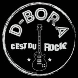

Groupe de rock composant des morceaux originaux, explorant les tumultes de l'existence et les passions déchaînées.
Le nom du groupe rend hommage à sa jeune bassiste, Déborah, disparue trop tôt dans un accident de la route en 2020.
Fondé en 2012 mais véritablement actif depuis 2018, D-BORA est présent sur la scène locale depuis 2021 pour délivrer son rock puissant et entraînant.